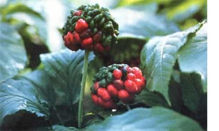

PHOTOS BY MOTHER'S STAFF AND SUPPLIED BY THE AUTHOR
Sang berries are red when mature . . . however, they then take 18 months to sprout. It will be five years after the seedlings emerge before the roots are big enough to sell.